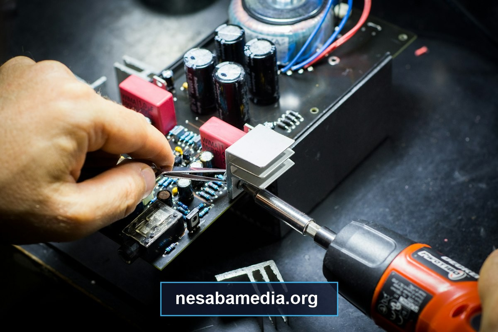

Printer serbaguna All-in-One Epson EcoTank L3210 merupakan salah satu perangkat cetak berbasis sistem tangki tinta terintegrasi yang paling populer dan banyak digunakan di perkantoran, instansi pendidikan, percetakan dokumen, hingga pengguna rumahan di seluruh Nusantara. Sebagai penerus resmi dari seri legendaris L3110, seri L3210 menawarkan durabilitas tinggi, efisiensi konsumsi daya listrik yang sangat hemat, serta kualitas cetak teks dan foto beresolusi tinggi hingga 5760 x 1440 DPI.
Kendati demikian, seluruh lini printer inkjet modern pabrikan Epson telah dilengkapi dengan algoritma proteksi keamanan internal bernama Waste Ink Pad Counter. Mekanisme ini secara otomatis akan memblokir operasional mesin dan memunculkan status galat Service Required (A printer's ink pad is at the end of its service life) ketika printer telah mencapai batas volume pembuangan tertentu. Ketika situasi ini melanda di tengah tenggat waktu pekerjaan mendesak, memahami cara kerja perangkat lunak resetter (Adjustment Program) dan langkah pemulihan mekanis yang benar menjadi solusi mutlak yang sangat krusial bagi kelangsungan operasional Anda.
- 1. Apa Penyebab Utama Munculnya Notifikasi Service Required pada Printer Epson L3210?
- 2. Apa yang Dimaksud dengan Software Resetter (Adjustment Program) Epson L3210?
- 3. Bagaimana Prosedur Menyiapkan Komputer dan Printer Sebelum Menjalankan Proses Reset?
- 4. Bagaimana Langkah demi Langkah Mengoperasikan Resetter Epson L3210 Secara Tuntas?
- 5. Apa Saja Masalah dan Error yang Kerap Muncul Saat Proses Reset dan Solusinya?
- 6. Bagaimana Melakukan Pembersihan Fisik Kotak Penampung Spons Pembuangan Tinta?
- 7. Bagaimana Cara Merawat Printer Pasca Reset Agar Terhindar dari Kerusakan Head Cetak?
- 8. Tanya Jawab Eksklusif (FAQ) Seputar Resetter dan Perawatan Epson EcoTank L3210?
Apa Penyebab Utama Munculnya Notifikasi Service Required pada Printer Epson L3210?
Banyak pengguna awam mengira bahwa printer mereka mengalami kerusakan komponen mekanik yang fatal ketika mendadak berhenti mencetak di tengah jalan. Padahal, kemunculan pesan Service Required bukanlah tanda kerusakan perangkat keras, melainkan sebuah tindakan preventif yang disengaja oleh sistem mikrokontroler printer untuk mencegah terjadinya banjir tinta residu di dalam ruangan komputer Anda.
Bagaimana Mekanisme Kerja Penghitung Internal Waste Ink Pad Counter?
Setiap kali printer Epson L3210 dinyalakan pertama kali, melakukan proses booting awal, memompa tinta saat perintah Head Cleaning dieksekusi, atau mencetak foto dokumen dalam jumlah banyak, pompa vakum kecil di bawah rumah printhead akan menyedot sejumlah kecil cairan tinta dari nosel. Tinta kotor yang disedot ini tidak dibuang ke luar printer, melainkan dialirkan melalui selang karet silikon menuju bantalan busa penyerap (sponge waste pad) yang tersembunyi di bagian dasar mesin.
Karena printer tidak memiliki sensor optik atau sensor cairan di dalam kotak spons tersebut, mikrokontroler menggunakan perhitungan matematika (counter logic) yang disimpan pada chip memori EEPROM (Electrically Erasable Programmable Read-Only Memory). Setiap siklus pembersihan dan pergerakan head dihitung dalam bentuk poin. Ketika total akumulasi poin mencapai batas toleransi 100% (umumnya setara dengan sekitar 6.000 hingga 7.500 lembar cetak tergantung intensitas head cleaning), firmware printer secara otomatis akan mengunci seluruh perintah cetak demi mencegah luberan tinta keluar ke meja kerja.
Mengapa Lampu Indikator Tinta dan Kertas Berkedip Bergantian (Blinking Alternately)?
Secara visual pada fisik perangkat, status Waste Ink Pad Counter Full ditandai oleh pola kedipan lampu LED tombol panel yang khas. Lampu indikator tinta berwarna oranye dan lampu indikator kertas berwarna oranye akan menyala dan mati secara bergantian (alternating blinking) secara terus menerus, sementara lampu power hijau tetap menyala atau ikut berkedip pelan. Pada layar monitor komputer, utilitas Epson Status Monitor 3 akan menampilkan jendela pop-up peringatan bertuliskan "It is time to reset the ink levels" atau "A printer's ink pad is at the end of its service life. Please contact Epson Support."

Apakah Penggantian Bantalan Tinta Fisik Saja Cukup Tanpa Melakukan Reset Software?
Jawabannya adalah tidak. Meskipun Anda membongkar bodi printer dan mengganti seluruh bantalan busa spons penyerap dengan spons baru yang bersih dan kering, printer tetap tidak akan mau beroperasi. Hal ini terjadi karena status penguncian berada pada nilai numerik biner di dalam chip EEPROM motherboard printer. Tanpa mereset nilai counter tersebut kembali ke angka 0% (zero points) menggunakan software service tool, motherboard akan terus menganggap bahwa spons pembuangan masih dalam kondisi jenuh cairan.
Apa yang Dimaksud dengan Software Resetter (Adjustment Program) Epson L3210?
Epson Adjustment Program (sering disingkat sebagai AdjProg) adalah perangkat lunak diagnostik dan kalibrasi resmi yang awalnya dikembangkan oleh teknisi pabrikan Epson untuk keperluan pusat servis resmi (Authorized Service Center). Aplikasi ini bertindak sebagai jembatan komunikasi tingkat rendah (low-level serial communication) antara sistem operasi Windows dan mikrokontroler printer melalui antarmuka kabel USB.
| Fungsi dan Parameter | Penggunaan Standar Pengguna | Penggunaan Teknisi Adjustment Program |
|---|---|---|
| Akses Status Counter | Hanya persentase perkiraan umum | Inspeksi detail Main Pad dan Platen Pad Point |
| Penghapusan Counter | Tidak dapat dilakukan via Control Panel | Inisialisasi ulang instan kembali ke 0 poin (0%) |
| Kalibrasi Mekanikal | Alignment dasar melalui driver | Bi-D adjustment, head angular, voltage writing |
| Inspeksi Riwayat Cetak | Tidak tersedia | EEPROM dump, riwayat jam paper, total pass count |
Bagaimana Software Ini Mengakses Memori EEPROM pada Motherboard Printer?
Saat dijalankan, Adjustment Program mengirimkan paket perintah instruksi heksadesimal terenkripsi melalui port komunikasi USB virtual. Program meminta data register alamat counter pada chip EEPROM printer, membaca nilai akumulasi poin saat ini, dan menyediakan perintah Initialization untuk menimpa (overwrite) alamat memori tersebut dengan nilai nol murni. Begitu proses penulisan ulang berhasil dan printer dimatikan sementara, firmware motherboard akan membaca status memori baru yang bersih dan kembali membuka kunci mekanisme pencetakan.
Apa Saja Fitur Diagnostik Lain yang Disediakan oleh Epson Adjustment Program?
Selain fungsi utamanya mereset Waste Ink Pad Counter, utilitas Adjustment Program menyimpan berbagai perkakas pemeliharaan tingkat lanjut yang sangat berguna bagi teknisi hardware:
- Head Cleaning Power Flushing: Memerintahkan pompa untuk menyedot tinta dengan daya hisap maksimal guna mengatasi penyumbatan nosel yang sangat parah.
- Print Head Voltage ID Setting: Mengatur ulang kode kalibrasi voltase printhead ketika Anda melakukan pergantian unit head baru.
- Bi-directional (Bi-D) Adjustment: Menyelaraskan waktu penembakan tetesan tinta ketika printhead bergerak dari kiri ke kanan dan sebaliknya, guna menghilangkan bayangan ganda pada cetakan garis tegak lurus.
- EEPROM Dump and Restore: Mencadangkan seluruh isi berkas konfigurasi firmware printer ke dalam berkas biner cadangan untuk keamanan pemulihan sistem.
Mengapa Harus Menggunakan Software yang Bersih dari Modifikasi Trojan Berbahaya?
Karena Adjustment Program merupakan perangkat lunak yang sangat dicari oleh jutaan pengguna di internet, banyak peretas dan oknum tidak bertanggung jawab menyisipkan malware berbahaya (seperti Trojan Generic, keylogger, dan cryptominer) ke dalam arsip file resetter yang dibagikan secara gratis di forum-forum mencurigakan. Menjalankan file resetter yang telah disusupi malware dapat menginfeksi sistem operasi Windows Anda, mencuri data perbankan, atau bahkan merusak (corrupt) firmware BIOS motherboard printer hingga mati total. Selalu pastikan Anda mengunduh berkas resetter dari repositori terverifikasi yang telah diuji integritasnya.
Bagaimana Prosedur Menyiapkan Komputer dan Printer Sebelum Menjalankan Proses Reset?
Kegagalan dalam proses eksekusi reset counter sering kali bukan disebabkan oleh kerusakan software, melainkan akibat kelalaian pada tahapan persiapan lingkungan kerja. Menyiapkan sistem dengan tertib akan menjamin proses transmisi data serial ke printer berlangsung cepat tanpa gangguan galat komunikasi.
Mengapa Koneksi USB Wajib Digunakan dan Tidak Boleh Menggunakan Jaringan Nirkabel?
Meskipun pada beberapa model printer lain terdapat fitur Wi-Fi, transmisi data reset level firmware menuntut jalur pertukaran data yang stabil dengan latensi mendekati nol. Komunikasi nirkabel rentan mengalami interferensi sinyal, paket data hilang (packet loss), atau pemutusan sesi sepihak yang dapat menyebabkan proses penulisan memori EEPROM terputus di tengah jalan. Oleh karena itu, penggunaan kabel data USB berpelindung (shielded USB cable) yang terhubung langsung ke port motherboard komputer adalah syarat mutlak yang tidak dapat ditawar.
Bagaimana Cara Menonaktifkan Sementara Antivirus Windows Defender Agar File Tidak Terhapus?
Aplikasi resetter pihak ketiga umumnya menggunakan modul runtime pembaca port hardware tingkat rendah yang sering kali dideteksi secara keliru (false positive) oleh sistem proteksi Windows Defender sebagai Win32/Hacktool. Jika file AdjProg.exe terhapus atau dikarantina oleh antivirus, program tidak akan dapat dibuka.
Untuk menonaktifkan sementara perlindungan real-time: Buka menu Windows Security > Virus & threat protection > Manage settings, lalu ubah sakelar Real-time protection ke posisi Off selama sekitar 10 menit saat proses reset berlangsung. Setelah proses selesai, Anda dapat mengaktifkannya kembali dengan aman.
Apa Saja Driver Pendukung yang Harus Terpasang Rapi di Windows Device Manager?
Program resetter membutuhkan driver resmi Epson agar dapat mengenali nama perangkat secara akurat. Pastikan printer telah terhubung kabel USB dan dikenali pada Device Manager di bawah kategori Print queues atau Printers sebagai EPSON L3210 Series. Jika perangkat hanya terdeteksi sebagai USB Printing Support tanpa label nama Epson yang jelas, lakukan instalasi driver resmi terlebih dahulu sebelum membuka Adjustment Program.
Bagaimana Langkah demi Langkah Mengoperasikan Resetter Epson L3210 Secara Tuntas?
Setelah seluruh persiapan teknis terpenuhi, ikuti panduan terstruktur langkah demi langkah berikut untuk mereset Waste Ink Pad Counter printer Anda kembali ke kondisi nol:
Bagaimana Memilih Port Komunikasi USB yang Tepat pada Menu Select?
- Ekstrak file arsip resetter yang telah Anda unduh ke folder baru di desktop.
- Klik kanan pada file Adjprog.exe, lalu pilih Run as administrator.
- Pada jendela utama aplikasi yang muncul, klik tombol Select di sudut kanan atas.
- Pada kolom Model Name, pastikan tertera L3210 (atau Auto Selection).
- Pada kolom Port, ubah pilihan dari Auto Selection menjadi port USB spesifik tempat printer Anda terhubung, contohnya:
USB001 (L3210 Series). Memilih port spesifik akan mencegah kegagalan deteksi printer. Klik OK.
Bagaimana Cara Masuk ke Menu Particular Adjustment Mode dan Menemukan Waste Ink Pad Counter?
- Setelah kembali ke layar utama, klik tombol Particular adjustment mode.
- Sebuah daftar panjang modul fungsi pemeliharaan akan ditampilkan di layar monitor.
- Gulir ke bawah menuju kategori Maintenance, lalu temukan dan klik ganda pada opsi Waste ink pad counter.
- Klik tombol OK untuk membuka jendela kerja inspeksi counter.
Bagaimana Prosedur Memeriksa Nilai Poin Persentase pada Main Pad dan Platen Pad Counter?
- Di dalam jendela Waste ink pad counter, beri tanda centang pada kotak Main pad counter dan kotak Platen pad counter.
- Klik tombol Check di bagian bawah kanan.
- Adjustment Program akan segera membaca chip EEPROM printer Anda. Dalam waktu 3 detik, kolom di sebelah kanan akan menampilkan nilai poin numerik beserta persentase pemakaian saat ini (misalnya:
6320 points [100%]). Hal ini mengonfirmasi bahwa counter printer memang telah mencapai batas maksimal.
Bagaimana Langkah Inisialisasi dan Kapan Waktu yang Tepat Mematikan Tombol Power Printer?
- Pastikan kedua kotak centang (Main pad dan Platen pad) tetap tercentang aktif.
- Klik tombol Initialize untuk memulai proses pembersihan counter.
- Sebuah kotak dialog konfirmasi akan muncul dengan pertanyaan "When the OK button is clicked, initialization is done". Klik OK.
- Tunggu beberapa saat hingga muncul kotak dialog instruksi penting: "Please turn off the printer".
- Segera tekan tombol fisik Power pada printer Anda untuk mematikan unit mesin. Jangan mengklik tombol OK di layar sebelum printer benar-benar dalam keadaan mati!
- Setelah printer mati total (seluruh lampu LED padam), klik tombol OK pada kotak dialog di layar komputer.
- Sebuah pesan konfirmasi final akan muncul: "Please turn on the printer".
- Nyalakan kembali printer Anda dengan menekan tombol Power. Printer akan melakukan kalibrasi pergerakan head normal dan kedua lampu indikator oranye yang sebelumnya berkedip kini akan padam total, digantikan oleh lampu Power hijau yang menyala tenang. Status printer Anda kini telah kembali normal 100%!
Di Mana Menemukan Rujukan Terpercaya Mengenai resetter epson l3210 nesabamedia?
Memiliki panduan visual yang terpercaya serta sumber file utilitas yang bersih dari ancaman virus merupakan kebutuhan mutlak bagi setiap pemilik perangkat percetakan. Bagi Anda yang mendambakan tutorial teknologi terlengkap, panduan instalasi langkah demi langkah berbahasa Indonesia, serta pemecahan masalah perangkat lunak terpercaya, silakan mengakses dokumentasi komprehensif mengenai resetter epson l3210 nesabamedia yang telah menjadi rujukan utama bagi jutaan pembaca dan teknisi komputer di seluruh Indonesia.
Apa Saja Masalah dan Error yang Kerap Muncul Saat Proses Reset dan Solusinya?
Dalam beberapa situasi khusus, eksekusi Adjustment Program dapat terhenti akibat kendala komunikasi sistem. Memahami makna dari setiap kode kesalahan akan membantu Anda menyelesaikan persoalan secara mandiri tanpa harus membawa printer ke tempat servis.
Bagaimana Solusi Menangani Kode Galat Error 21000068 Terkait Komunikasi Port?
Kode galat Communication error! Error Code: 21000068 mengindikasikan bahwa jalur port USB terputus saat program sedang berusaha mengirimkan perintah baca-tulis ke memori printer. Masalah ini kerap dipicu oleh kabel USB yang terlalu panjang (lebih dari 3 meter), penggunaan USB hub tanpa adaptor daya eksternal, atau koneksi fisik port yang longgar. Pindahkan colokan USB ke port bagian belakang motherboard (rear USB port) komputer desktop Anda dan ulangi prosesnya.
Mengapa Tombol Check Menampilkan Pesan Communication Error atau Printer Not Found?
Jika program menampilkan pesan "Communication error / Printer not found", penyebab paling lazim adalah adanya antrean dokumen cetak yang masih tertahan (stuck print queue) di dalam Windows Print Spooler. Ketika spooler terkunci oleh berkas yang gagal cetak, port USB tidak dapat dialihkan ke mode pemeliharaan Adjustment Program.
del /Q /F /S "%systemroot%\System32\Spool\Printers\*.*"
net start spooler
Bagaimana Cara Mengatasi File Resetter yang Tidak Bisa Dibuka Akibat Proteksi Keygen?
Beberapa paket resetter yang beredar di internet dikunci menggunakan sistem registrasi perangkat keras (Hardware ID Keygen). Jika Anda mendapati pesan lisensi kadaluarsa atau meminta kode aktivasi, pastikan Anda menggunakan paket resetter versi No Keygen / One-Click Run yang tidak menuntut pendaftaran serial rumit, atau jalankan program dalam mode kompatibilitas Windows 7 dengan hak akses Administrator.
Bagaimana Melakukan Pembersihan Fisik Kotak Penampung Spons Pembuangan Tinta?
Melakukan reset counter menggunakan software hanyalah separuh dari prosedur pemeliharaan printer yang benar. Ingatlah bahwa reset software hanya mengubah angka di memori chip, tetapi tidak melenyapkan cairan tinta fisik yang telah terserap di dalam kotak spons penampung.
Di Mana Letak Baut dan Kotak Pembuangan (Maintenance Box) pada Bagian Belakang L3210?
Kotak penampung tinta pembuangan (Waste Ink Pad Box) pada Epson L3210 berkedudukan di bagian sudut kanan bawah belakang unit mesin. Untuk mengaksesnya:
- Cabut kabel power dan kabel USB dari printer demi keselamatan kerja.
- Putar printer menghadap ke belakang. Anda akan melihat satu buah sekrup baut pengunci penutup bodi di sudut bawah.
- Gunakan obeng plus (+) untuk melepas baut tersebut, lalu tarik penutup plastik bodi ke bawah.
- Di dalamnya, Anda akan melihat satu unit kotak plastik abu-abu yang dikunci oleh satu baut tambahan. Lepaskan baut tersebut, lalu geser dan tarik kotak penampung spons keluar secara perlahan.
Bagaimana Cara Mencuci dan Mengeringkan Spons Penampung Residu Tinta Secara Aman?
Jika kondisi spons sudah sangat jenuh dan berat oleh cairan tinta hitam pekat, Anda dapat mencucinya sendiri:
- Keluarkan susunan lapisan spons dari dalam kotak plastik dengan bantuan pinset (gunakan sarung tangan karet pelindung agar tangan tidak terkena noda tinta yang sulit hilang).
- Bilas spons di bawah air mengalir secara berulang-ulang tanpa memerasnya terlalu keras agar bentuk strukturnya tidak rusak gepeng.
- Setelah air bilasan menjadi jernih, jemur spons di bawah terik sinar matahari hingga benar-benar kering kerontang (biasanya membutuhkan waktu 1 hingga 2 hari).
- Pasang kembali susunan spons ke dalam kotak plastik dan pasang kembali ke bodi printer dengan rapat.
Mengapa Modifikasi Selang Pembuangan Eksternal Banyak Dipilih oleh Pemilik Usaha Percetakan?
Bagi kalangan penyedia jasa fotokopi dan percetakan dokumen yang mencetak puluhan rim kertas setiap bulan, membongkar kotak spons secara berkala adalah pekerjaan yang merepotkan. Solusi praktis yang paling banyak diterapkan adalah dengan memasang selang pembuangan eksternal. Selang pembuangan internal dialihkan ke luar bodi printer dan ditampung ke dalam botol kecil transparan. Dengan demikian, pengguna cukup membuang isi botol ketika cairan mulai penuh tanpa perlu khawatir akan kebocoran spons di dalam mesin.
Bagaimana Cara Merawat Printer Pasca Reset Agar Terhindar dari Kerusakan Head Cetak?
Setelah status counter kembali normal ke angka nol, menerapkan pola pemakaian yang sehat akan menjamin komponen printhead dan mekanikal motor printer Anda tetap awet hingga ratusan ribu lembar cetak.
Mengapa Penggunaan Tinta Original Seri 003 Sangat Disarankan untuk Menjaga Sirkulasi Nosel?
Printer Epson L3210 menggunakan formula tinta khusus berkode seri 003. Tinta original Epson memiliki tingkat kekentalan (viskositas) dan keasaman yang diformulasikan secara presisi agar tidak mengikis lapisan kristal piezoelektrik di dalam printhead. Penggunaan tinta isi ulang sembarangan berharga murah sering kali mengandung partikel endapan kasar yang menyumbat lubang nosel mikroskopis dan memicu kerusakan permanen pada printhead.
Berapa Frekuensi Cetak Berkala yang Dianjurkan untuk Mencegah Kebekuan Tinta?
Kelemahan alami dari printer sistem tangki cairan adalah sifat tinta yang mudah mengering apabila terpapar udara tanpa sirkulasi berkala. Sangat dianjurkan untuk mencetak minimal 1 hingga 2 lembar dokumen berwarna penuh setiap 3 hingga 5 hari sekali. Kebiasaan ini akan menjaga agar cairan tinta di dalam pipa kapiler dan ruang damper tidak mengental atau membentuk gelembung udara.
Bagaimana Menghindari Siklus Pembersihan Head (Head Cleaning) yang Berlebihan?
Banyak pengguna yang panik saat hasil cetak bergaris langsung melakukan Head Cleaning berulang-ulang hingga 5 kali berturut-turut. Tindakan ini sangat keliru karena Head Cleaning memompa tinta dalam jumlah besar yang secara drastis mempercepat kepenuhan Waste Ink Pad Counter dan memicu panas berlebih pada pompa mesin. Batasi Head Cleaning maksimal 2 kali sesi. Jika hasil masih bergaris, diamkan printer selama sekitar 1 hingga 2 jam agar gelembung udara di dalam head mengendap secara alami sebelum melakukan Nozzle Check ulang.
Tanya Jawab Eksklusif (FAQ) Seputar Resetter dan Perawatan Epson EcoTank L3210?
Berapa Kali Maksimal Sebuah Printer Epson L3210 Dapat Direset Sepanjang Masa Pakainya?
Secara teori software, tidak ada batasan kuota berapa kali sebuah printer dapat direset menggunakan Adjustment Program. Anda dapat melakukan reset 5 kali, 10 kali, atau lebih selama chip EEPROM motherboard masih dalam kondisi sehat. Namun dari sisi hardware, pastikan pembersihan fisik spons atau penggantian maintenance box selalu diimbangi setiap kali proses reset software dilakukan.
Apakah Proses Reset Software Ini Akan Menghapus Garansi Resmi dari Pabrikan?
Pihak Epson Service Center memiliki log catatan sistem pada firmware printer. Jika printer Anda masih berada dalam masa garansi resmi 2 tahun atau 30.000 lembar cetak, membawa printer ke servis resmi untuk penggantian spons gratis merupakan pilihan terbaik. Namun jika masa garansi telah habis atau Anda membutuhkan printer segera beroperasi untuk pekerjaan darurat, melakukan reset software mandiri adalah solusi tercepat dan paling efisien.
Apa Perbedaan Utama Antara Resetter Seri L3210 dengan Seri Pendahulunya L3110?
Meskipun memiliki bentuk fisik sasis bodi yang serupa, firmware motherboard pada Epson L3210 memiliki kode identifikasi modul komunikasi yang berbeda dari L3110. Menggunakan software resetter milik L3110 pada seri L3210 akan menghasilkan pesan Model Name Mismatch Error. Selalu gunakan paket Adjustment Program yang secara spesifik dirancang untuk seri L3210.
Apakah Resetter Epson L3210 Kompatibel Digunakan pada Sistem Operasi Windows 11?
Ya, Adjustment Program Epson L3210 kompatibel penuh dengan seluruh versi Windows modern, mulai dari Windows 7, Windows 8.1, Windows 10, hingga Windows 11 arsitektur 64-bit. Pastikan Anda selalu mengeksekusi file dengan opsi Run as administrator untuk memberikan izin akses port komunikasi serial secara penuh.